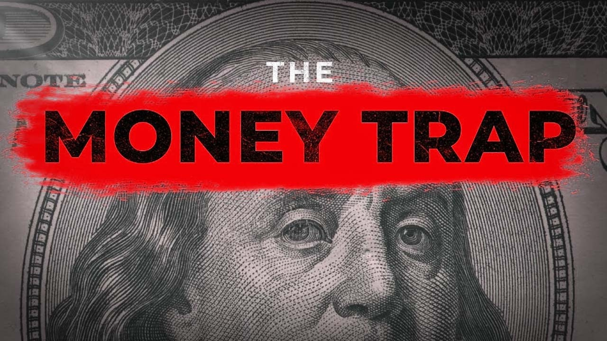

【大多数人永远不会致富…原因如下】
Summary: Most people never get rich because they were trained to stay poor, focusing on safety over wealth-building, as explained by Robert Kiyosaki's "Rich Dad Poor Dad" philosophy.
摘要： 大多数人永远不会致富，因为他们被教导安于贫穷，追求安全而非积累财富，正如罗伯特·清崎在《穷爸爸富爸爸》中阐述的理念。

⏱️ Estimated Reading Time: 6 min
Most people never get rich because they were trained to stay poor.
大多数人永远不会致富，因为他们被教导安于贫穷。
From day one, you're taught to get a good job, save money, buy a house, and retire.
从第一天起，你被教导要找份好工作、存钱、买房然后退休。
Sounds safe, right?
听起来很安全，对吧？
But safe doesn't build wealth.
但安全无法创造财富。
Safe keeps you average.
安全让你沦为平庸。
That's what Robert Kiyosaki meant when he talked about his poor dad, a hardworking man, but stuck in the same financial hamster wheel as everyone else.
这就是罗伯特·清崎谈到他穷爸爸时的意思——一个勤奋的人，却和所有人一样困在财务的仓鼠轮里。
Because he believed a paycheck meant security.
因为他相信工资意味着安全感。
But here's the truth.
但真相是：
Security is an illusion.
安全感是幻觉。
But Rich Dad, he saw money as a game, a tool, a way to buy freedom, not comfort.
但富爸爸将金钱视为游戏、工具和购买自由（而非安逸）的途径。
And the biggest difference, he wasn't afraid of risk.
最大的区别是：他不惧怕风险。
He was afraid of regret.
他害怕的是遗憾。
So ask yourself, are you playing to win or just playing not to lose?
所以问问自己：你是为了赢而行动，还是只为不输而挣扎？
Because if you're scared to lose money, you'll never make any.
因为若害怕亏钱，你就永远赚不到钱。
Lesson number one, your house is not an asset.
第一课：你的房子不是资产。
For years, I thought owning a home was the dream.
多年来，我以为拥有房子就是梦想。
The American dream, right?
美国梦，对吧？
Wrong.
错了。
Kiyosaki said something I couldn't shake.
清崎说过让我无法释怀的话：
An asset puts money in your pocket.
资产是往你口袋里送钱的东西。
A liability takes money out.
负债是从你口袋里掏钱的东西。
And that home you're so proud of.
而你引以为豪的房子呢？
Mortgage, maintenance, insurance, all draining your wallet every single month.
房贷、维护费、保险费，每月都在榨干你的钱包。
But nobody tells you that because society glorifies ownership even if it chains you.
但没人告诉你这点，因为社会美化了所有权——即使它束缚着你。
You think you own the house, but really the bank owns you.
你以为拥有房子，实则是银行拥有你。
Don't just chase status, chase cash flow.
别只追求地位，去追求现金流。
If it doesn't pay you monthly, it's not an asset.
若不能每月给你带来收入，它就不是资产。
Lesson number two, the school system is financially broken.
第二课：学校教育在财务上是失败的。
School never taught you how to make money.
学校从未教你如何赚钱。
It taught you how to obey, how to memorize, how to follow the rules, not how to build wealth, not how to invest.
它教你服从、死记硬背、遵守规则，而非积累财富或投资。
So we graduate financially illiterate.
于是我们毕业时对财务一无所知。
And then we're thrown into a world of credit cards, loans, taxes, and inflation, completely unarmed.
然后被扔进信用卡、贷款、税收和通胀的世界，毫无武装。
And we wonder why we struggle.
接着困惑为何活得艰难。
Because the system was never designed to make you rich.
因为这体系本就不是为让你致富设计的。
It was designed to make you useful.
它是为让你"有用"设计的。
Real financial education starts when school ends.
真正的财商教育从离开学校开始。
And if you don't teach yourself money, money will teach you pain.
若不自学金钱知识，金钱就会用痛苦给你上课。
Lesson number three, the rich don't work for money.
第三课：富人不为钱工作。
This one messed with my head cuz I thought hard work was the answer.
这点曾颠覆我的认知，因我曾以为努力工作是答案。
Clock in, clock out, do overtime, hustle.
打卡上下班、加班、拼命。
But Rich Dad flipped that.
但富爸爸颠覆了这点。
He said, "Don't work for money. Let money work for you."
他说："别为钱工作，让钱为你工作。"
At first, it felt like a scam, like a rich guy cheat code.
起初这像骗局，像富人的作弊码。
But then I realized when you trade time for money, there's always a ceiling.
但后来我明白：用时间换钱永远有上限。
Your hours are limited.
你的时间是有限的。
Your energy runs out.
你的精力会耗尽。
But assets, they don't sleep.
但资产不会睡觉。
They don't get tired.
它们不会疲倦。
They pay you.
它们为你赚钱。
Whether you're awake or on a beach.
无论你醒着还是在海滩上。
So, what are you doing?
所以你在做什么？
Working harder for dollars or building something that earns while you breathe?
是更努力挣工资，还是打造能呼吸时也赚钱的东西？
Stop thinking like an employee.
别再像雇员一样思考。
Start thinking like an owner.
开始像所有者一样思考。
That's when your life starts to shift.
那时你的人生才会改变。
Lesson number four. You're already paying a price.
第四课：你已在付出代价。
You just don't realize it.
只是你没意识到。
People say investing is risky, but have you ever added up what not investing is costing you?
人们说投资有风险，但可曾计算过不投资的代价？
Every year you wait, inflation eats your savings.
每等待一年，通胀就蚕食你的储蓄。
Every month you delay, you miss compound growth.
每拖延一月，你就错过复利增长。
You think staying where you are is safe, but it's not.
你以为原地不动很安全，其实不然。
You're already paying a price.
你已在付出代价。
Choose the one that leads somewhere.
选择能带来未来的那条路。
Lesson number five, wealth is a choice.
第五课：财富是种选择。
Being poor isn't your fault, but staying poor, that's on you.
贫穷不是你的错，但安于贫穷就是你的责任。
You weren't taught this stuff.
没人教过你这些。
Nobody handed you a playbook.
没人递给你攻略。
But you're not helpless.
但你并非无能为力。
You're just scared.
你只是害怕。
Scared to change.
害怕改变。
But here's the reality.
但现实是：
You can build assets.
你可以建立资产。
You can learn about cash flow, taxes, investing, real estate, and business.
你可以学习现金流、税务、投资、房地产和商业。
But you have to want it more than you want your excuses because no one's coming to save you.
但你必须比找借口更渴望改变，因为没人会来拯救你。
It's just you.
只有你自己。
You and the decision you make right now.
你和此刻做出的决定。
You can read all the books, but nothing changes until you do.
你可以读遍所有书籍，但除非行动，否则一切照旧。
So ask yourself, are you going to be like poor dad, or are you ready to think like rich dad?
所以问问自己：要像穷爸爸一样，还是准备好像富爸爸一样思考？